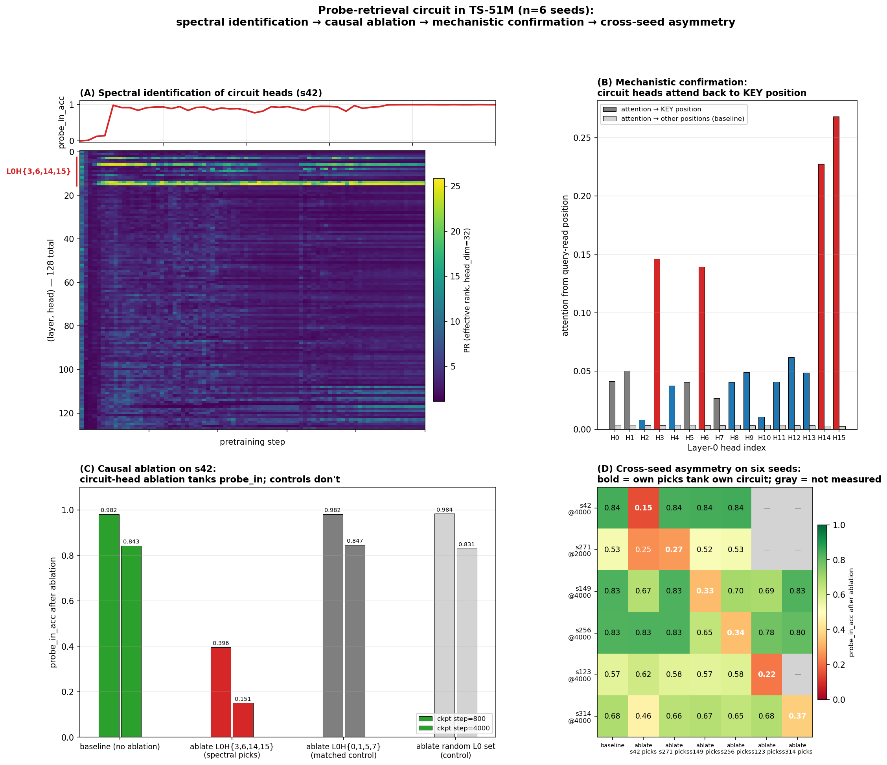
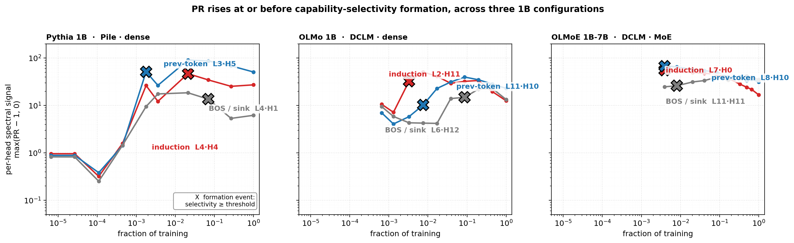

Foundations
The signal is the participation ratio (effective rank) of each attention head’s output, tracked per-head, per-checkpoint, over training. A head whose attention output is concentrated in one direction across many inputs has PR ≈ 1 — it produces a single content-independent default. A head whose output spans many directions has high PR — its behavior is content-dependent. The collapse from low to high PR is the capability-emergence signature.
Validated first on a synthetic probe. We pretrain a small transformer (TS-51M; 8L × 512d × 16h) six times with different random seeds on a long-range key-retrieval task. Every run learns it; every run implements it with different attention heads. The same spectral signal pre-identifies the causally-relevant heads on every seed without labels, ablation runs, or attention-pattern inspection. Causal ablation confirms 42–95× selectivity. Cross-seed pattern: L7H13 appears in 3 of 6 seeds; other heads show partial convergence; primary circuit structure (L0 retrieval substrate + seed-specific late-layer team) is consistent across all six runs.
The formal three-step recipe — spectral signal (PR-integral over training) → task-pattern screen (all-head capability-specific selectivity) → causal verification (group ablation vs matched-random) — is in methodology_paper.md, with an explicit scope statement on pattern-vs-task-causal decoupling.

Scale generalization
The signal generalizes from synthetic probe to natural-text pretraining. Tested on three independently-trained dense transformers — Karpathy 124M (FineWeb-10B), Pythia 160M (Pile), Pythia 410M (Pile) — precision-at-k matches within 1–3 percentage points across all three: 100% at k≤10, ~90–95% at the natural elbow in the PR-integral distribution. The fraction of heads doing identifiable specialized computation is conserved at ~17–19% across an 8× parameter scale range; capability count scales linearly with model size while the fraction of model capacity used for specialized work stays constant.
At 1B-class scale the methodology pivots from integral-top-K ranking to an all-head capability-specific screen — measure capability-X selectivity in isolation for every head, ablate the full set with selectivity ≥ 50×. The screen identifies a 3–4 head induction circuit in every 1B model tested (Pythia 1B, OLMo 1B DCLM, OLMoE 1B-7B MoE DCLM); synthetic ablation tanks induction from ~5% to ~0%, natural-text ablation produces a 5–7× differential effect over matched-random in the same layers, and 13.5× differential on logit-of-target on OLMoE.
Predictiveness holds across the scale ladder. The capability-specific screen applied at intermediate training checkpoints recovers the final-checkpoint induction circuit using 0.3–2% of total training tokens; per-head PR rises before induction selectivity crosses the 50× threshold for every final-checkpoint induction head sampled.
Natural-text writeup → · 1B-class writeup →
Cross-architecture universality
The cleanest cross-architecture finding is a single empirical regularity that holds in every model tested. L0 and L1 have zero BOS-classified heads across all five natural-text models — Pythia 160M, 410M, 1B; OLMo 1B; OLMoE 1B-7B. Universal architectural property of decoder-only LMs at 100M+ scale: the first two layers do diverse general-purpose computation throughout training; the BOS attractor only kicks in from L2 (DCLM data) or L4–L6 (Pile data) onward.
Three drivers of whole-model BOS-class fraction separate cleanly: scale grows BOS within the Pythia family (43% → 58%, saturates near 54% at 1B); DCLM data adds ~20pp over Pile at the same scale + architecture (OLMo 1B 78% vs Pythia 1B 54%); MoE reduces BOS by ~10pp vs dense at the same scale + data (OLMoE 68% vs OLMo 78%). MoE doesn’t cause attention sinks; if anything it suppresses them relative to its dense counterpart.
The universality holds at every training checkpoint sampled, not just the final one — L0 and L1 produce zero BOS-classified heads at every one of 10 trajectory revisions, in every one of the three 1B models. Whatever an attention sink is, it isn’t something the model can or wants to do in the first two layers, even when 70–84% of the rest of the network is BOS-dominated.
Developmental mechanism
Why is the predictiveness from 0.3–2% of training possible? The capability-specific screen at any intermediate checkpoint recovers the same circuit causal at the final checkpoint because the circuit, once it forms, is stable — and it forms early. Mech-interp classification at each of 10 trajectory revisions across Pythia 1B, OLMo 1B, and OLMoE 1B-7B (30 runs total) shows the induction circuit crystallizing within 0.3–2% of training tokens consumed in every model.
The temporal ordering is informative. In DCLM-trained models (OLMo 1B, OLMoE 1B-7B), the induction circuit emerges before the BOS attractor by 10–20× in tokens. Induction is established first; BOS dominance is a later-training phenomenon. The L0/L1 zero-BOS floor holds throughout — it is not a final-checkpoint property but a structural constraint visible at every revision sampled.
Concrete cost: detecting the induction circuit at an intermediate checkpoint requires one forward pass through that checkpoint to extract per-head attention output and run the capability-specific screen. No labels, no full ablation pass, no attention-pattern interpretation. Group-ablation causal verification takes one additional forward pass. The signal is cheap enough to read off every saved checkpoint of a long pretraining run.

Composed-task extension: four tasks, twelve cells, no two alike
The recipe extends to composed tasks. We ran four composed tasks across all three 1B models — Indirect Object Identification (IOI), greater-than (Hanna et al., 2023), successor sequences (Gould et al., 2023), and variable binding. Each task has a natural task-pattern screen (attention from query position to the position carrying task-relevant content), each model solves the task at high baseline accuracy, and the all-head capability screen plus matched-random ablation localize the primary causal circuit on each (task, model) cell.
| Task | Pythia 1B (Pile dense) | OLMo 1B (DCLM dense) | OLMoE 1B-7B (DCLM MoE) |
|---|---|---|---|
| IOI | prev-token (Δ−82pp) | S-Inhibition (Δ−32pp) | name-mover (Δ−18pp) |
| Greater-than | top-5 GT-specific (Δ−69) | margin-not-argmax | prev-token (Δ−6 > GT-specific Δ−5) |
| Successor | top-5 succ + prev-token (Δ−38, −28) | top-5 succ-specific (Δ−81) | prev-token (Δ−58 ≫ succ-specific Δ−2) |
| Variable binding | filtered top-5 (Δ−16); naive screen is interferer (Δ+37) | prev-token primary (Δ−32) | prev-token primary (Δ−38) |
Twelve (task, model) cells; no two use the same primary screen at the same magnitude. The methodology recipe (spectral signal → task-pattern screen → causal verification) generalizes as a workflow. The specific circuit it identifies does not. Circuit-level mechanistic findings on one model are not safe to assume on another, even at the same scale — an explicit scope statement formalizes this in the methodology paper.
One sub-pattern is robust: OLMoE’s primary mechanism is the prev-token circuit on three of four tasks (greater-than, successor, variable binding). On greater-than, prev-token ablation hurts more than the GT-specific heads; on successor, prev-token ablation hurts ~30× more than the successor-specific screen. The exception is IOI, whose structure is built around name-copying at the final position. Working hypothesis: MoE models build task circuits compositionally on top of a foundational prev-token positional substrate, except when the task structure directly probes a different attention pattern. Three data points; testable on additional MoE LMs.
A new screen-outcome category: interferer. Variable binding on Pythia 1B produced a screen that, when ablated, improves the task by +37 percentage points (49% → 86%). Mechanism: 4 of the 5 VB-screen heads are best-classified as first-token (BOS); ablating them releases a competing BOS-attractor signal that had been suppressing the actual VB computation. A separate matched-random ablation floor sweep on Pythia 1B’s induction-circuit layers gives the same signature on induction itself — random ablation of 11 heads brings induction top-1 from 4% to 36%, a 9× improvement over baseline. The screen-outcome taxonomy now reads: cause · secondary cause · correlate · interferer · null; the mechanistic underlying source in our panel is BOS-attractor competition with the downstream task computation.
Methodology paper §7 (cross-task extension) → · IOI deep dive →
Scope and open questions
What the methodology delivers: pre-identification of capability-relevant attention heads as a training-time observable, validated across ~20× scale, two architectures, three pretraining datasets, two single-task capability classes (induction, previous-token), and four composed tasks (IOI, greater-than, successor, variable binding) on the 1B-class panel. What it does not deliver: a complete V-circuit decomposition (we show heads attend to the right positions, not how downstream MLPs consume the retrieved signal); a single ranking signal that simultaneously gives high precision and matches per-head capability strength (PR-integral is high-precision; its rank correlation with per-head selectivity is imperfect); a mechanism for predicting which screen will be primary on a new (model, task) pair (we ablate candidate screens and find the one that’s causal; we don’t yet predict which it will be).
One methodological refinement worth flagging up-front: under the all-head capability screen, screen-identified heads can be supporters, interferers (ablation helps the task), or null. Individual-head ablation disambiguates between “screen identifies the causal circuit” and “screen identifies BOS-attractor competitors that mask the causal circuit.” The BOS-class filter prescribed in the methodology paper is one diagnostic; the per-head ablation pass is the universal one. Both are cheap. Both are necessary on BOS-dominated models.
Open questions the data raises: does the L0/L1 zero-BOS floor extend to 7B+ scale, to GQA / MLA attention variants, and to long-context or retrieval-augmented training distributions? At what scale and under what conditions does the methodology actually break? Why does each model have exactly one super-prev-token head, and what determines its layer placement? Can the spectral signal be used as a training-time intervention — fired as a callback to allocate compute, freeze weights, or scale gradients on detected heads — rather than only as an offline read-off?
The methodology was originally framed as “the signal is noisier on natural text.” That framing has been retracted: under the all-head capability-specific screen, precision on natural text is high. The original confusion came from ranking against a single capability class at a time; the screen evaluates capabilities in isolation and recovers them cleanly.
Methodology and code
Formal three-step recipe: methodology_paper.md. Full repo: github.com/skydancerosel/spectral-probe-circuits.
- README — TS-51M probe-circuit foundations, six seeds
- INDUCTION_HEADS.md — natural-text generalization at 124M / 160M / 410M
- cross_architecture/README.md — 1B-class extension; Pythia 1B, OLMo 1B, OLMoE 1B-7B
- cross_architecture/BLOG.md — short summary of cross-architecture findings
- cross_architecture/developmental_note.md — 10-revision developmental sweep across the 1B panel
- cross_architecture/ioi_extension_note.md — IOI across three 1B models
Companion: closure testing for co-activation communities
Step 3 of the recipe above — group ablation against matched-random controls — is a general validation gate, not specific to the spectral signal. A companion working draft applies it to a different proposed method: co-activation clustering, the approach (most developed by Bhalla et al. on SAE features) that groups units by what fires together. The question is when a co-activation community is a circuit — a group whose removal degrades the behavior it’s credited with — versus units that co-activate for reasons unrelated to function. The test: cluster per-head focus statistics with a pairwise Ising model (no target template), ablate the discovered community, and compare per-example damage to five matched-random head-sets across three metrics (cross-entropy, top-1 accuracy, target-token logit).
In two dense 1B models (OLMo 1B, Pythia 1B), across synthetic and natural-text inputs, the communities pass closure — ablation damages behavior in the predicted direction, well outside the random-control distribution. One case (Pythia 1B, natural text) shows a 25× divergence between metrics on the same ablation: the target-token logit collapses (−52σ) while aggregate loss barely moves — a downstream-redundancy signature, and the reason the protocol reports all three metrics rather than loss alone. In the MoE model (OLMoE-1B-7B) the procedure does not close: the marginal Ising collapses on natural text, and route-conditional stratification recovers a statistically real community (+3σ against a random-partition null) that then fails closure in the wrong direction — ablating it improves loss, more so outside the discovered route stratum than inside.
The takeaway is methodological: co-activation clustering proposes candidate communities cheaply and without a target template; closure testing is what separates load-bearing circuits from co-active-but-not-causal ones. The dense results show the proposal-plus-closure pipeline working; the MoE result marks where it stops, and the failure is structured — wrong-direction and route-specific — rather than noisy, which makes it the informative boundary case rather than a dead end.